- Visualising Data
Above all else show the data.
–Edward Tufte, The Visual Display of Quantitative Information, 2001
Visualising data is one of the most important tasks facing the data analyst. It’s important for two distinct but closely related reasons. Firstly, there’s the matter of drawing “presentation graphics”: displaying your data in a clean, visually appealing fashion makes it easier for your reader to understand what you’re trying to tell them. Equally important, perhaps even more important, is the fact that drawing graphs helps you to understand the data. To that end, it’s important to draw “exploratory graphics” that help you learn about the data as you go about analysing it. These points might seem pretty obvious, but I cannot count the number of times I’ve seen people forget them.
To give a sense of the importance of this chapter, I want to start with a classic illustration of just how powerful a good graph can be. To that end, the figure below shows a redrawing of one of the most famous data visualisations of all time (courtesy of Michael Friendly’s HistData package): John Snow’s 1854 map of cholera deaths. The map is elegant in its simplicity. In the background we have a street map, which helps orient the viewer. Over the top, we see a large number of small dots, each one representing the location of a cholera case. The larger symbols show the location of water pumps, labelled by name. Even the most casual inspection of the graph makes it very clear that the source of the outbreak is almost certainly the Broad Street pump. Upon viewing this graph, Dr Snow arranged to have the handle removed from the pump, ending the outbreak that had killed over 500 people. Such is the power of a good data visualisation.

The goals in this chapter are twofold: firstly, to discuss several fairly standard graphs that we use a lot when analysing and presenting data, and secondly, to show you how to create graphs in R.
With that in mind, the structure of this chapter is as follows: I’ll start out by giving you a very quick overview of how graphics work in R. I’ll then discuss several different kinds of graph and how to draw them, as well as showing the basics of how to customise these plots. I’ll then talk in more detail about R graphics, discussing some of those complicated and boring issues.
15.1 An overview of R graphics
Reduced to its simplest form, you can think of R graphics like a painting. You start out with an empty canvas. Every time you use a graphics function, it paints some new things onto your canvas. Later you can paint more things over the top if you want, layering new information over the old. This way of thinking about plotting data is referred to as the painter’s model - the key thing to keep in mind is because the plot is constructed sequentially, the order in which you do things matters.
We can extend the painting metaphor a little. If you want to paint a picture, you need to paint it on something. In real life, you can paint on lots of different things. Painting onto canvas isn’t the same as painting onto paper, and neither is the same as painting on a wall. In R, the thing that you paint onto is called a graphics device. In RStudio, the default graphics device is RStudioGD and it corresponds to the “plot” pane. If you were using the basic R program for Windows (i.e., R.exe) the default device is windows, on the Mac application (R.app) it’s called quartz, etc. However, from the computer’s perspective there’s nothing terribly special about drawing pictures on screen, and so R is quite happy to paint pictures directly into a file. R can paint several different types of image files: jpeg, png, pdf, postscript, tiff and bmp files are all available as graphics devices and you can write plots directly to those using those1
Secondly, when you paint a picture you need to paint it with something. Maybe you want to do an oil painting, but maybe you want to use watercolour. And, generally speaking, you pretty much have to pick one or the other. The analog to this in R is a “graphics system”. A graphics system defines a collection of graphics commands about what to draw and where to draw it. Something that surprises most new R users is the discovery that R actually has several mutually incompatible graphics systems. The two of most interest to us are the base graphics system that comes with R and the ggplot2 system2 that forms part of tidyverse. There’s quite a difference of opinion among R users about the relative merits of these two systems. You can get started in base graphics really easily. To see just how easy it is, let’s load the afl data again.
afl <- read_csv("./data/afl.csv")Let’s give ourselves the task of drawing a histogram. We don’t need to make it pretty, we just want to plot the frequency distribution for the number of points scored by the home team. The function to do this in base graphics is called hist and here it is:
hist(afl$home_score)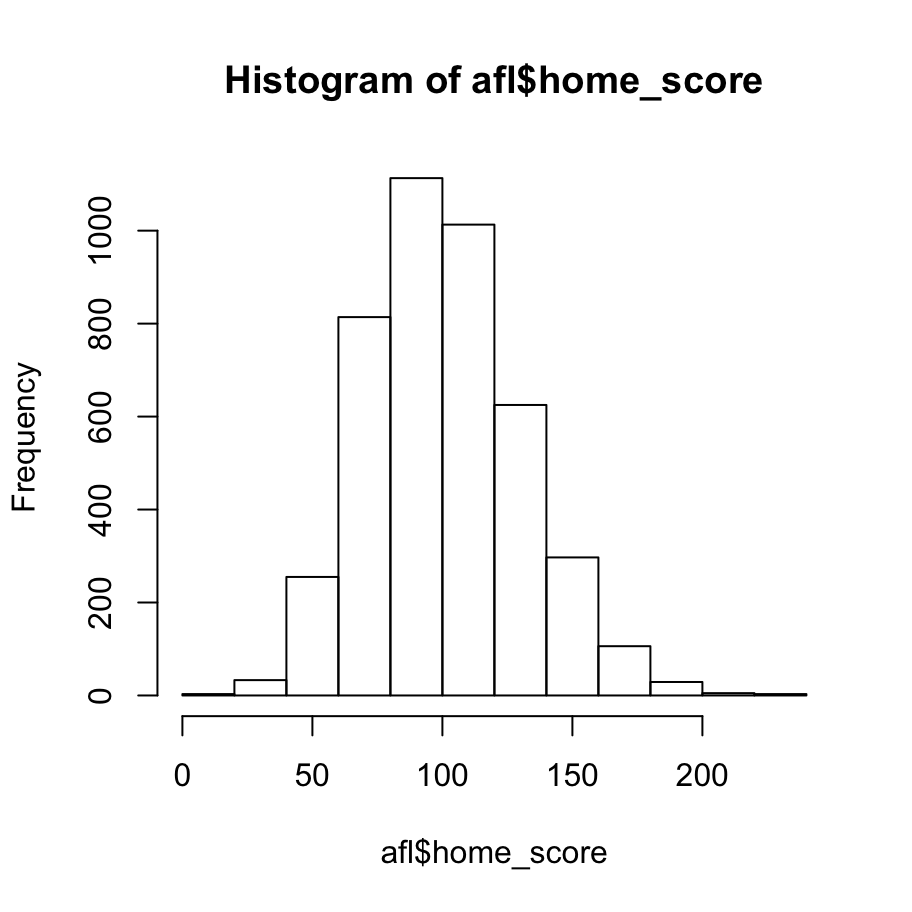 It’s not exactly pretty – though it’s way nicer than the default plots that I remember seeing when I was younger – but it gets the job done.
Okay, how do I create a histogram the tidyverse way? Much like base graphics, ggplot2 recognises that histograms are such a fundamentally useful thing that there exists a “geom” (a term I’ll explain in a moment) for them, but there’s no way to draw a plot without going through a somewhat more convoluted process:
afl %>%
ggplot(aes(x = home_score)) +
geom_histogram()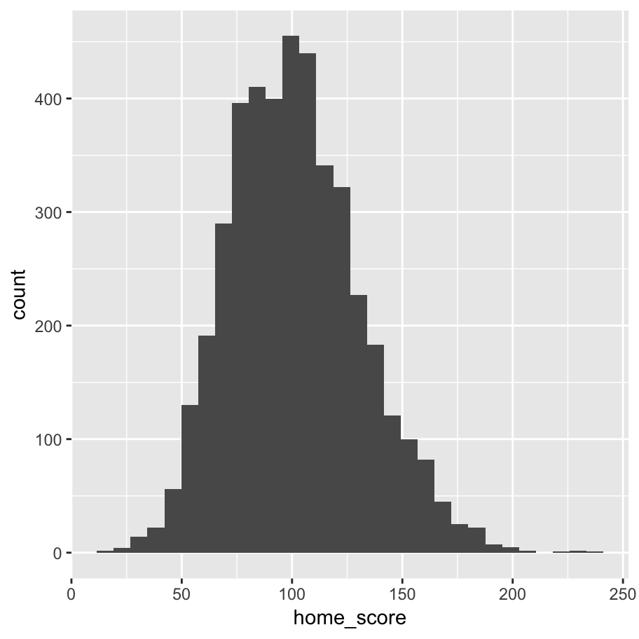 The output is prettier, admittedly, but our goal here wasn’t to be pretty. Our goal was to be simple. For this comparison, the tidyverse approach is not as straightforward as base graphics.
(to be discussed elsewhere!) Not surprisingly, the traditional graphics system is the older of the two: in fact, it’s actually older than R since it has it’s origins in S, the system from which R is descended. In this chapter I’m going to stay within the traditional graphics system, and talk about the ggplot2 package at a later date.
Thirdly, a painting is usually done in a particular style. Maybe it’s a still life, maybe it’s an impressionist piece, or maybe you’re trying to annoy me by pretending that cubism is a legitimate artistic style. Regardless, each artistic style imposes some overarching aesthetic and perhaps even constraints on what you can do with it. A graphics system allows a variety of possible styles, but there are nevertheless quite a lot of constraints built into each system - it takes a lot of work to try to mimic the output of one system in another!
At this point, I think we’ve covered more than enough background material. The point that I’m trying to make by providing this discussion isn’t to scare you with all these horrible details, but rather to try to convey to you the fact that R doesn’t really provide a single coherent graphics system. Instead, R itself provides a platform, and different people have built different graphical tools using that platform. As a consequence of this fact, there are many different universes of graphics, and a great multitude of packages that live in them. At this stage you don’t need to understand these complexities, but it’s useful to know that they’re there. But for now, I think we can be happy with a simpler view of things: we’ll draw pictures on screen using the traditional graphics system, and as much as possible we’ll stick to high level commands only.
So let’s start painting.
15.2 An introduction to plotting
Before I discuss any specialised graphics, let’s start by drawing a few very simple graphs just to get a feel for what it’s like to draw pictures using R. To that end, let’s create a small vector Fibonacci that contains a few numbers we’d like R to draw for us. Then, we’ll ask R to plot those numbers:
Fibonacci <- c( 1,1,2,3,5,8,13 )
plot( Fibonacci )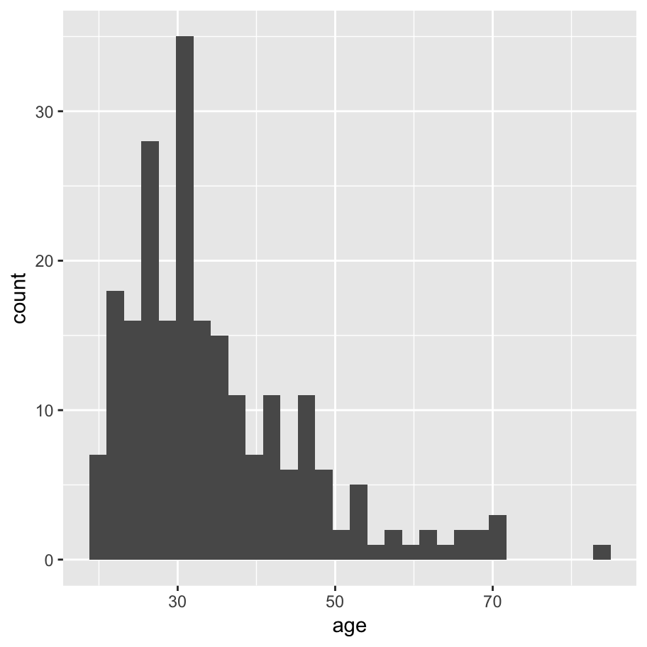
As you can see, what R has done is plot the values stored in the Fibonacci variable on the vertical axis (y-axis) and the corresponding index on the horizontal axis (x-axis). In other words, since the 4th element of the vector has a value of 3, we get a dot plotted at the location (4,3). That’s pretty straightforward, and the image is probably pretty close to what you would have had in mind when I suggested that we plot the Fibonacci data. However, there’s quite a lot of customisation options available to you, so we should probably spend a bit of time looking at some of those options. So, be warned: this ends up being a fairly long section, because there’s so many possibilities open to you. Don’t let it overwhelm you though… while all of the options discussed here are handy to know about, you can get by just fine only knowing a few of them. The only reason I’ve included all this stuff right at the beginning is that it ends up making the rest of the chapter a lot more readable!
15.2.1 A tedious digression
Before we go into any discussion of customising plots, we need a little more background. The im- portant thing to note when using the plot function, is that it’s another example of a generic function much like print, so its behaviour changes depending on what kind of input you give it. The plot function is quite fancy in this respect than the other two, and its behaviour depends on two arguments, x (the first input, which is required) and y (which is optional). This makes it (a) extremely powerful once you get the hang of it, and (b) hilariously unpredictable, when you’re not sure what you’re doing. As much as possible, I’ll try to make clear what type of inputs produce what kinds of outputs. For now, however, it’s enough to note that I’m only doing very basic plotting, and as a consequence all of the work is being done by the plot.default function.
What kinds of customisations might we be interested in? If you look at the help documentation for the default plotting method (i.e., type ?plot.default or help("plot.default")) you’ll see a very long list of arguments that you can specify to customise your plot. I’ll talk about several of them in a moment, but first I want to point out something that might seem quite wacky. When you look at all the different options that the help file talks about, you’ll notice that some of the options that it refers to are “proper” arguments to the plot.default function, but it also goes on to mention a bunch of things that look like they’re supposed to be arguments, but they’re not listed in the “Usage” section of the file, and the documentation calls them graphical parameters instead. Even so, it’s usually possible to treat them as if they were arguments of the plotting function. Very odd. In order to stop my readers trying to find a brick and look up my home address, I’d better explain what’s going on; or at least give the basic gist behind it.
What exactly is a graphical parameter? Basically, the idea is that there are some characteristics of a plot which are pretty universal: for instance, regardless of what kind of graph you’re drawing, you probably need to specify what colour to use for the plot, right? So you’d expect there to be something like a col argument to every single graphics function in R? Well, sort of. In order to avoid having hundreds of arguments for every single function, what R does is refer to a bunch of these “graphical parameters” which are pretty general purpose. Graphical parameters can be changed directly by using the low-level par function, which I discuss briefly latr on though not in a lot of detail. If you look at the help files for graphical parameters (i.e., type ?par) you’ll see that there’s lots of them. Fortunately, (a) the default settings are generally pretty good so you can ignore the majority of the parameters, and (b) as you’ll see as we go through this chapter, you very rarely need to use par directly, because you can “pretend” that graphical parameters are just additional arguments to your high-level function (e.g. plot). In short… yes, R does have these wacky “graphical parameters” which can be quite confusing. But in most basic uses of the plotting functions, you can act as if they were just undocumented additional arguments to your function.
15.2.2 Customising the title and the axis labels
One of the first things that you’ll find yourself wanting to do when customising your plot is to label it better. You might want to specify more appropriate axis labels, add a title or add a subtitle. The arguments that you need to specify to make this happen are:
main. A character string containing the title.sub. A character string containing the subtitle.xlab. A character string containing the x-axis label.ylab. A character string containing the y-axis label.
Let’s have a look at what happens when we make use of all these arguments. Here’s the command…
plot(
x = Fibonacci,
main = "You specify title using the 'main' argument",
sub = "The subtitle appears here! (Use the 'sub' argument for this)",
xlab = "The x-axis label is 'xlab'",
ylab = "The y-axis label is 'ylab'"
)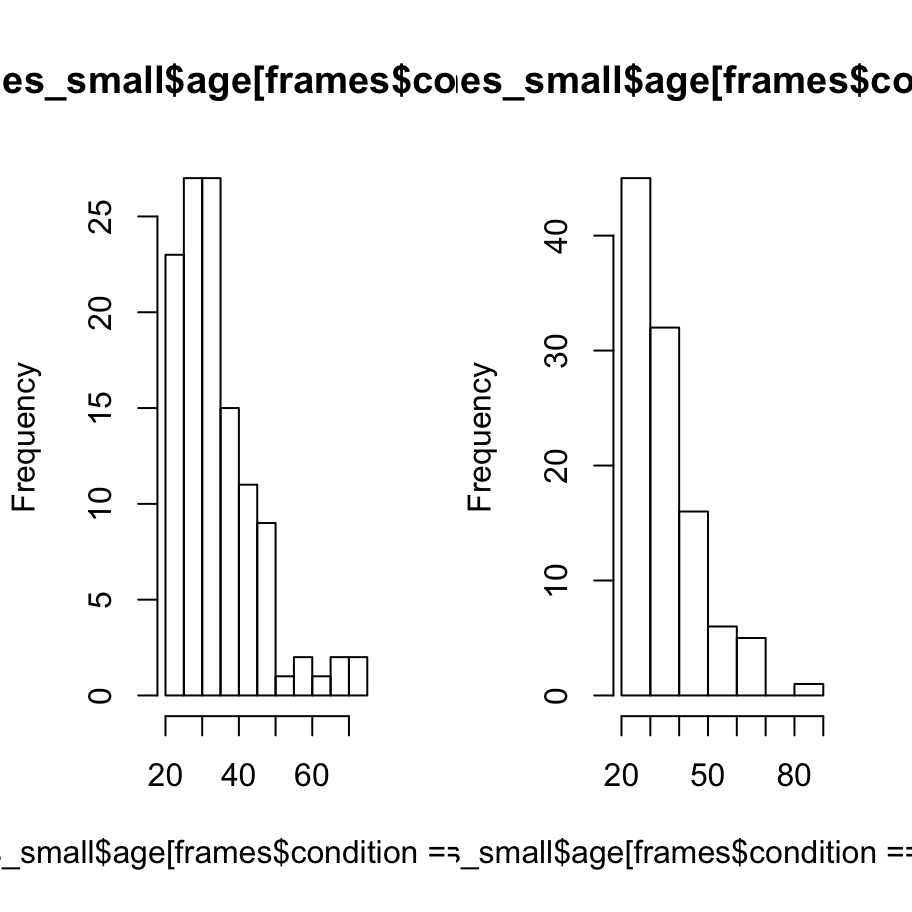
That’s about what we’d expect. Even so, there’s a couple of interesting features worth calling your attention to. Firstly, notice that the subtitle is drawn below the plot, which I personally find annoying; as a consequence I almost never use subtitles. You may have a different opinion, of course, but the important thing is that you remember where the subtitle actually goes. Secondly, notice that R has decided to use boldface text and a larger font size for the title. This is one of my most hated default settings in R graphics, since I feel that it draws too much attention to the title. Generally, while I do want my reader to look at the title, I find that the R defaults are a bit overpowering, so I often like to change the settings. To that end, there are a bunch of graphical parameters that you can use to customise the font style:
- Font styles:
font.main,font.sub,font.lab,font.axis. These four parameters control the font style used for the plot title (font.main), the subtitle (font.sub), the axis labels (font.lab: note that you can’t specify separate styles for the x-axis and y-axis without using low level commands), and the numbers next to the tick marks on the axis (font.axis). Somewhat irritatingly, these arguments are numbers instead of meaningful names: a value of1corresponds to plain text,2means boldface,3means italic and4means bold italic. - Font colours:
col.main,col.sub,col.lab,col.axis. These parameters do pretty much what the name says: each one specifies a colour in which to type each of the different bits of text. Conveniently, R has a very large number of named colours (typecolours()to see a list of over 650 colour names that R knows), so you can use the English language name of the colour to select it.3 Thus, the parameter value here string like"red","gray25"or"springgreen4"(yes, R really does recognise four different shades of “spring green”). - Font size:
cex.main,cex.sub,cex.lab,cex.axis. Font size is handled in a slightly curious way in R. Thecexpart here is short for “character expansion”, and it’s essentially a magnification value. By default, all of these are set to a value of 1, except for the font title:cex.mainhas a default magnification of 1.2, which is why the title font is 20% bigger than the others. - Font family:
family. This argument specifies a font family to use: the simplest way to use it is to set it to"sans","serif", or"mono", corresponding to a san serif font, a serif font, or a monospaced font. If you want to, you can give the name of a specific font, but keep in mind that different operating systems use different fonts, so it’s probably safest to keep it simple. Better yet, unless you have some deep objections to the R defaults, just ignore this parameter entirely. That’s what I usually do.
To give you a sense of how you can use these parameters to customise your titles, let’s play around with several of these arguments:
plot(
x = Fibonacci, # the data to plot
main = "The first 7 Fibonacci numbers", # the title
xlab = "Position in the sequence", # x-axis label
ylab = "The Fibonacci number", # y-axis label
font.main = 1, # plain text for title
cex.main = 1, # normal size for title
font.axis = 2, # bold text for numbering
col.lab = "gray50" # grey colour for labels
)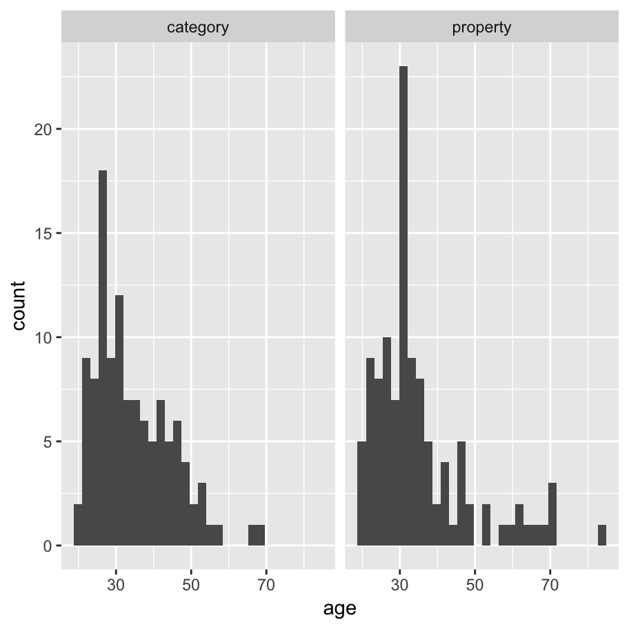
Although this command is quite long, it’s not complicated: all it does is override a bunch of the default parameter values. The only difficult aspect to this is that you have to remember what each of these parameters is called, and what all the different values are. And in practice I never remember: I have to look up the help documentation every time, or else look it up in this book.
15.2.3 Changing the plot type
Adding and customising the titles associated with the plot is one way in which you can play around with what your picture looks like. Another thing that you’ll want to do is customise the appearance of the actual plot! To start with, let’s look at the single most important options that the plot function provides for you to use, which is the type argument. The type argument specifies the visual style of the plot. The possible values for this are:
type = "p". Draw the points only.type = "l". Draw a line through the points.type = "o". Draw the line over the top of the points.type = "b". Draw both points and lines, but don’t overplot.type = "h". Draw “histogram-like” vertical bars.type = "s". Draw a staircase, going horizontally then vertically.type = "S". Draw a Staircase, going vertically then horizontally.type = "c". Draw only the connecting lines from the “b” version.type = "n". Draw nothing. (Apparently this is useful sometimes?)
The simplest way to illustrate what each of these really looks like is just to draw them. To that end, the figure below shows the same Fibonacci data, drawn using six different types of plot. As you can see, by altering the type argument you can get a qualitatively different appearance to your plot. In other words, as far as R is concerned, the only difference between a scatterplot and a line plot is that you draw a scatterplot by setting type = "p" and you draw a line plot by setting type = "l".
15.2.4 Changing other features of the plot
The second group of parameters I want to discuss are those related to the formatting of the plot itself:
- Colour of the plot:
col. As we saw with the previous colour-related parameters, the simplest way to specify this parameter is using a character string: e.g.,col = "blue". - Character used to plot points:
pch. The plot character parameter is a number between 1 and 25. What it does is tell R what symbol to use to draw the points that it plots. The simplest way to illustrate what the different values do is with a picture. The first figure below shows what the diffrent plotting characters look like. The default plotting character is a hollow circle (i.e.,pch = 1). - Background colour:
bg. The plot characters 21:25 have a separate “background colour” that is distinct from the main colourcol. To see this, the plot below setsbg = "blue". - Plot size:
cex. This parameter describes a character expansion factor (i.e., magnification) for the plotted characters. By defaultcex = 1, but if you want bigger symbols in your graph you should specify a larger value. - Line type:
lty. The line type parameter describes the kind of line that R draws. It has seven values which you can specify using a number between 0 and 6, or using a meaningful character string:"blank","solid","dashed","dotted","dotdash","longdash", or"twodash". Note that the“blank”version (value 0) just means that R doesn’t draw the lines at all. The other six versions are shown in the second figure below. - Line width:
lwd. The last graphical parameter in this category that I want to mention is the line width parameter, which is just a number specifying the width of the line. The default value is1. Not surprisingly, larger values produce thicker lines and smaller values produce thinner lines. Try playing around with different values oflwdto see what happens.
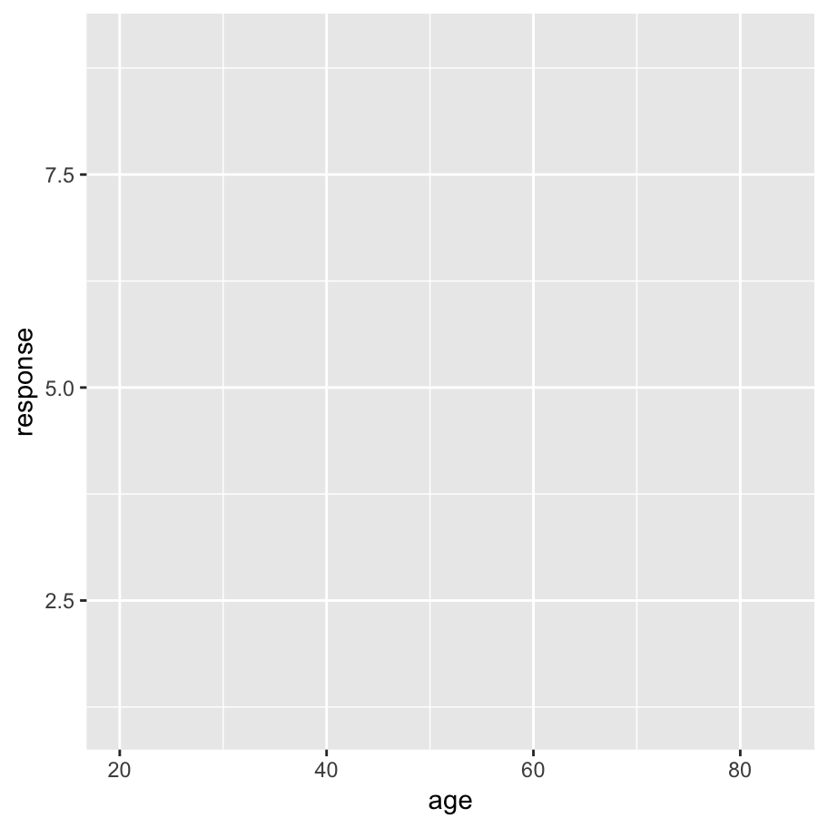
To illustrate what you can do by altering these parameters, let’s try the following command:
plot(
x = Fibonacci,
type = "b",
col = "blue",
pch = 19,
cex=5,
lty=2,
lwd=4
)
15.2.5 Changing the appearance of the axes
There are several other possibilities worth discussing. Ignoring all the graphical parameters for the moment, there’s a few other arguments to the plot function that you might want to use. As before, many of these are standard arguments that are used by a lot of high level graphics functions:
- Changing the axis scales:
xlim,ylim. Generally R does a pretty good job of figuring out where to set the edges of the plot. However, you can override its choices by setting thexlimandylimarguments. For instance, if I decide I want the vertical scale of the plot to run from 0 to 100, then I’d setylim = c(0, 100). - Suppress labelling:
ann. This is a logical-valued argument that you can use if you don’t want R to include any text for a title, subtitle or axis label. To do so, setann = FALSE. This will stop R from including any text that would normally appear in those places. Note that this will override any of your manual titles. For example, if you try to add a title using the main argument, but you also specifyann = FALSE, no title will appear. - Suppress axis drawing:
axes. Again, this is a logical valued argument. Suppose you don’t want R to draw any axes at all. To suppress the axes, all you have to do is addaxes = FALSE. This will remove the axes and the numbering, but not the axis labels (i.e. thexlabandylabtext). Note that you can get finer grain control over this by specifying thexaxtandyaxtgraphical parameters instead (see below). - Include a framing box:
frame.plot. Suppose you’ve removed the axes by setting axes = FALSE, but you still want to have a simple box drawn around the plot; that is, you only wanted to get rid of the numbering and the tick marks, but you want to keep the box. To do that, you set frame.plot = TRUE. Alternatively, you can usebox()as a command to do the same. )
Note that this list isn’t exhaustive. There are a various other arguments you can play with if you want to, but those are the ones you are probably most likely to want to use. As always, however, if these aren’t enough options for you, there’s also a number of other graphical parameters that you might want to play with as well. That’s the focus of the next section. In the meantime, here’s a command that makes use of all these different options:
plot(
x = Fibonacci, # the data
xlim = c(0, 15), # expand the x-scale
ylim = c(0, 15), # expand the y-scale
ann = FALSE, # delete all annotations
axes = FALSE, # delete the axes
frame.plot = TRUE # but include a framing box
)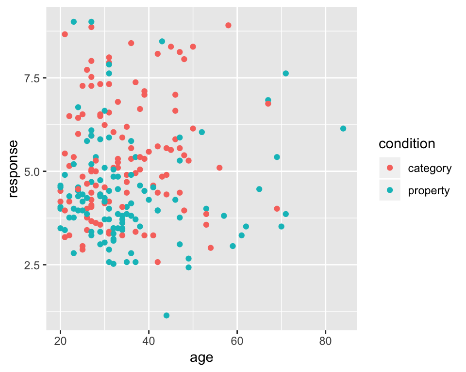
As one might hope, the axis scales on both the horizontal and vertical dimensions have been expanded, the axes have been suppressed as have the annotations, but I’ve kept a box around the plot.
Before moving on, I should point out that there are several graphical parameters relating to the axes, the box, and the general appearance of the plot which allow finer grain control over the appearance of the axes and the annotations.
- Suppressing the axes individually:
xaxt,yaxt. These graphical parameters are basically just fancier versions of theaxesargument we discussed earlier. If you want to stop R from drawing the vertical axis but you’d like it to keep the horizontal axis, setyaxt = "n". I trust that you can figure out how to keep the vertical axis and suppress the horizontal one! - Box type:
bty. In the same way thatxaxt,yaxtare just fancy versions ofaxes, the box type parameter is really just a fancier version of theframe.plotargument, allowing you to specify exactly which out of the four borders you want to keep. The way we specify this parameter is a bit stupid, in my opinion: the possible values are"o"(the default),"l","7","c","u", or"]", each of which will draw only those edges that the corresponding character suggests. That is, the letter"c"has a top, a bottom and a left, but is blank on the right hand side, whereas"7"has a top and a right, but is blank on the left and the bottom. Alternatively a value of"n"means that no box will be drawn. - Orientation of the axis labels:
las. I presume that the name of this parameter is an acronym of label style or something along those lines; but what it actually does is govern the orientation of the text used to label the individual tick marks (i.e., the numbering, not thexlabandylabaxis labels). There are four possible values forlas: A value of0means that the labels of both axes are printed parallel to the axis itself (the default). A value of1means that the text is always horizontal. A value of2means that the labelling text is printed at right angles to the axis. Finally, a value of3means that the text is always vertical.
Again, these aren’t the only possibilities. There are a few other graphical parameters that I haven’t mentioned that you could use to customise the appearance of the axes,4 but that’s probably enough (or more than enough) for now. To give a sense of how you could use these parameters, let’s try the following command:
plot(
x = Fibonacci, # the data
xaxt = "n", # don’t draw the x-axis
bty = "]", # keep bottom, right and top of box only
las = 1 # rotate the text
)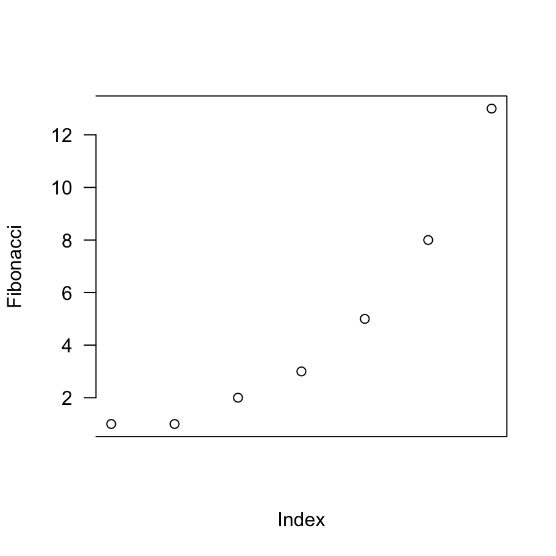
As you can see, this isn’t a very useful plot at all. However, it does illustrate the graphical parameters we’re talking about, so I suppose it serves its purpose.
15.2.6 Don’t panic
At this point, a lot of readers will be probably be thinking something along the lines of, “if there’s this much detail just for drawing a simple plot, how horrible is it going to get when we start looking at more complicated things?” Perhaps, contrary to my earlier pleas for mercy, you’ve found a brick to hurl and are right now leafing through a phone book trying to find my address.5 Well, fear not! And please, put the brick down. In a lot of ways, we’ve gone through the hardest part: we’ve already covered vast majority of the plot customisations that you might want to do. As you’ll see, each of the other high level plotting commands we’ll talk about will only have a smallish number of additional options. Better yet, even though I’ve told you about a billion different ways of tweaking your plot, you don’t usually need them. So in practice, now that you’ve read over it once to get the gist, the majority of the content of this section is stuff you can safely forget: just remember to come back to this section later on when you want to tweak your plot.
15.3 Histograms
Now that we’ve tamed (or possibly fled from) the beast that is R graphical parameters, let’s talk more seriously about some real life graphics that you’ll want to draw. We begin with the humble histogram. Histograms are one of the simplest and most useful ways of visualising data. They make most sense when you have an interval or ratio scale and what you want to do is get an overall impression of the data. You probably know how histograms work, since they’re so widely used, but for the sake of completeness I’ll describe them. All you do is divide up the possible values into bins, and then count the number of observations that fall within each bin. This count is referred to as the frequency of the bin, and is displayed as a bar. The height of the bar represents the proportion of cases that fall within that bin.
For some reason I just happen to be sitting on a data set that contains the winning margin (in points) for every single game played in the 2010 AFL (Australian Football League) season, stored in a variable called afl.margins. Let’s draw it as a histogram. The function you need to use is called hist, and it has pretty reasonable default settings:
load("./data/aflsmall.Rdata")
hist(afl.margins) Although this image would need a lot of cleaning up in order to make a good presentation graphic (i.e., one you’d include in a report), it nevertheless does a pretty good job of describing the data. In fact, the big strength of a histogram is that (properly used) it shows the entire spread of the data, so you can get a pretty good sense about what the data looks like. The downside to histograms is that they aren’t very compact: unlike some of the other plots I’ll talk about it’s hard to cram 20-30 histograms into a single image without overwhelming the viewer.
Although this image would need a lot of cleaning up in order to make a good presentation graphic (i.e., one you’d include in a report), it nevertheless does a pretty good job of describing the data. In fact, the big strength of a histogram is that (properly used) it shows the entire spread of the data, so you can get a pretty good sense about what the data looks like. The downside to histograms is that they aren’t very compact: unlike some of the other plots I’ll talk about it’s hard to cram 20-30 histograms into a single image without overwhelming the viewer.
The main thing that you need to be aware of when drawing histograms is determining where the breaks that separate bins should be located, and (relatedly) how many breaks there should be. In the figure above, you can see that R has made pretty sensible choices all by itself: the breaks are located at 0, 10, 20, …, 120, which is exactly what I would have done had I been forced to make a choice myself. However, there’s nothing stopping you from overriding the default values:
hist( x = afl.margins, breaks = 3 ) # histogram on the left has three breaks
hist( x = afl.margins, breaks = 0:116 ) # histogram on the right specifies the edge locations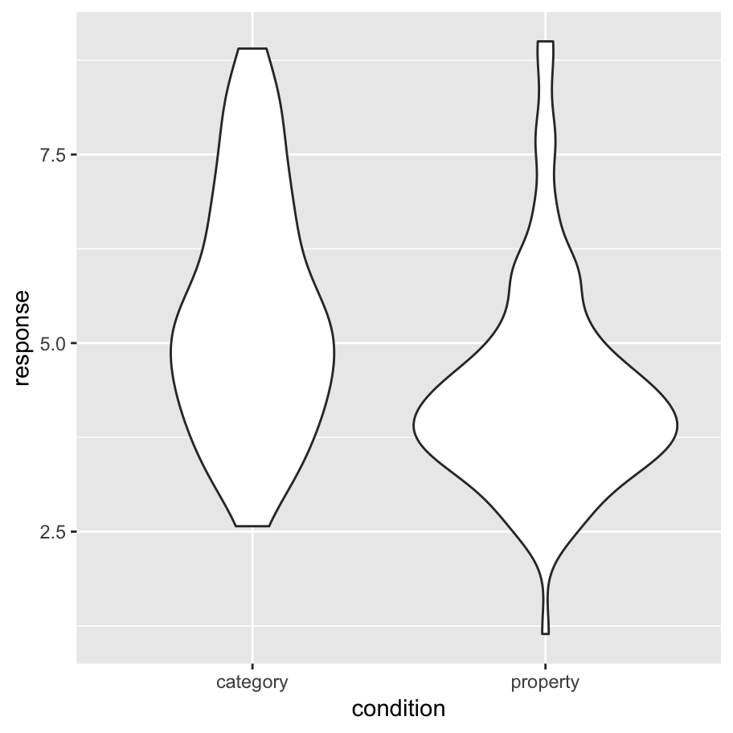
On the right, the bins are only 1 point wide. As a result, although the plot is very informative (it displays the entire data set with no loss of information at all!) the plot is very hard to interpret, and feels quite cluttered. On the other hand, the plot on the left has a bin width of 50 points, and has the opposite problem: it’s very easy to “read” this plot, but it doesn’t convey a lot of information about the data. One gets the sense that this histogram is hiding too much. In short, the way in which you specify the breaks has a big effect on what the histogram looks like, so it’s important to make sure you choose the breaks sensibly. In general R does a pretty good job of selecting the breaks on its own, since it makes use of some quite clever tricks that statisticians have devised for automatically selecting the right bins for a histogram, but nevertheless it’s usually a good idea to play around with the breaks a bit to see what happens.
There is one fairly important thing to add regarding how the breaks argument works. There are two different ways you can specify the breaks. You can either specify how many breaks you want (which is what I did on the left when I typed breaks = 3) and let R figure out where they should go, or you can provide a vector that tells R exactly where the breaks should be placed (which is what I did on the right when I typed breaks = 0:116). The behaviour of the hist function is slightly different depending on which version you use. If all you do is tell it how many breaks you want, R treats it as a “suggestion” not as a demand. It assumes you want “approximately 3” breaks, but if it doesn’t think that this would look very pretty on screen, it picks a different (but similar) number. It does this for a sensible reason – it tries to make sure that the breaks are located at sensible values (like 10) rather than stupid ones (like 7.224414). And most of the time R is right: usually, when a human researcher says “give me 3 breaks”, he or she really does mean “give me approximately 3 breaks, and don’t put them in stupid places”. However, sometimes R is dead wrong. Sometimes you really do mean “exactly 3 breaks”, and you know precisely where you want them to go. So you need to invoke “real person privilege”, and order R to do what it’s bloody well told. In order to do that, you have to input the full vector that tells R exactly where you want the breaks. If you do that, R will go back to behaving like the nice little obedient calculator that it’s supposed to be.
15.3.1 Visual style of your histogram
Okay, so at this point we can draw a basic histogram, and we can alter the number and even the location of the breaks. However, the visual style of the histograms shown in the previous plots could stand to be improved. We can fix this by making use of some of the other arguments to the hist function. Most of the things you might want to try doing have already been covered, but there’s a few new things:
- Shading lines:
density,angle. You can add diagonal lines to shade the bars: thedensityvalue is a number indicating how many lines per inch R should draw (the default value ofNULLmeans no lines), and theangleis a number indicating how many degrees from horizontal the lines should be drawn at (default isangle = 45degrees). - Specifics regarding colours:
col,border. You can also change the colours: in this instance thecolparameter sets the colour of the shading (either the shading lines if there are any, or else the colour of the interior of the bars if there are not), and theborderargument sets thecolourof the edges of the bars. - Labelling the bars:
labels. You can also attach labels to each of the bars using thelabelsargument. The simplest way to do this is to setlabels = TRUE, in which case R will add a number just above each bar, that number being the exact number of observations in the bin. Alternatively, you can choose the labels yourself, by inpuyting a vector of strings, e.g.,labels = c("label 1","label 2","etc")
Not surprisingly, this doesn’t exhaust the possibilities. If you type help("hist") or ?hist and have a look at the help documentation for histograms, you’ll see a few more options. A histogram that makes use of the histogram-specific customisations as well as several of the options we discussed earlier is shown below:
hist(
x = afl.margins, # data
main = "2010 AFL margins", # title of the plot
xlab = "Margin", # set the x-axis label
density = 10, # draw shading lines: 10 per inch
angle = 40, # set the angle of the shading lines is 40 degrees
border = "gray20", # set the colour of the borders of the bars
col = "gray80", # set the colour of the shading lines
labels = TRUE, # add frequency labels to each bar
ylim = c(0,40) # change the scale of the y-axis
)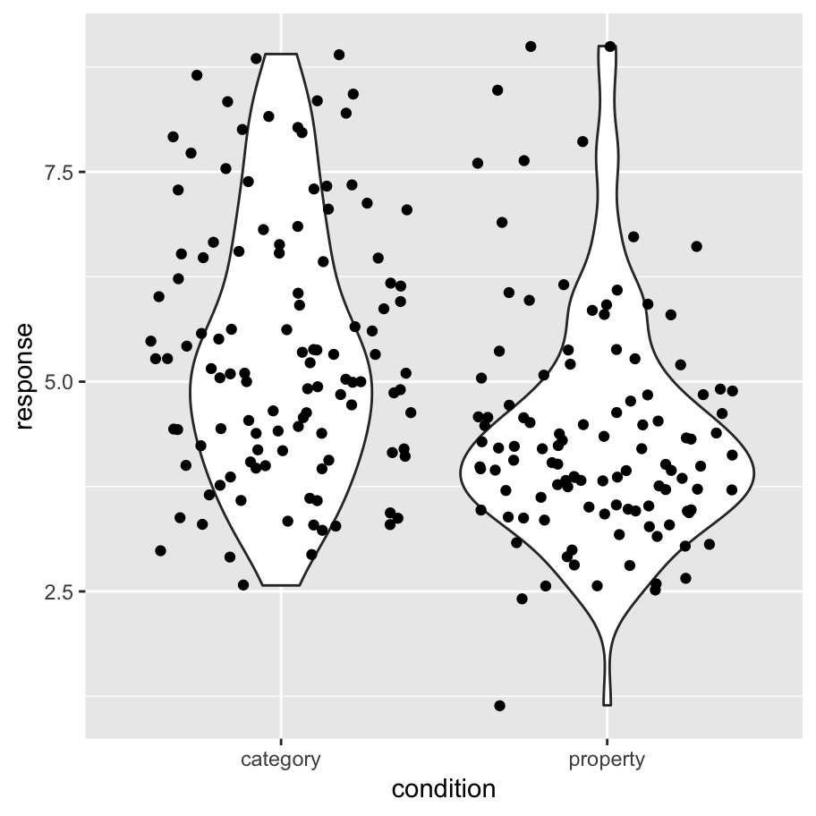
Overall, this is a much nicer histogram than the default ones.
15.4 Stem and leaf plots
Histograms are one of the most widely used methods for displaying the observed values for a variable. They’re simple, pretty, and very informative. However, they do take a little bit of effort to draw. Sometimes it can be quite useful to make use of simpler, if less visually appealing, options. One such alternative - an especially old-school alternative - is the stem and leaf plot. To a first approximation you can think of a stem and leaf plot as a kind of text-based histogram. Stem and leaf plots aren’t used as widely these days as they were 30 years ago, since it’s now just as easy to draw a histogram as it is to draw a stem and leaf plot. Not only that, they don’t work very well for larger data sets. As a consequence you probably won’t have as much of a need to use them yourself, though you may run into them in older publications. However, I admit that I have a bit of a soft spot for the stem and leaf plot, as a cute illustration of what you can achieve with a very limited medium. The function for drawing these plots is called stem, and here it is applied to the afl.margins:
stem( afl.margins )##
## The decimal point is 1 digit(s) to the right of the |
##
## 0 | 001111223333333344567788888999999
## 1 | 0000011122234456666899999
## 2 | 00011222333445566667788999999
## 3 | 01223555566666678888899
## 4 | 012334444477788899
## 5 | 00002233445556667
## 6 | 0113455678
## 7 | 01123556
## 8 | 122349
## 9 | 458
## 10 | 148
## 11 | 6The values to the left of the | are called stems and the values to the right are called leaves. If you just look at the shape that the leaves make, you can see something that looks a lot like a histogram made out of numbers, just rotated by 90 degrees. But if you know how to read the plot, there’s quite a lot of additional information here: each of the digits that make up the leaves corresponds to a single observation. For instance, let’s consider the row at the bottom that reads 11|6 and compare it to…
max( afl.margins )## [1] 116Hm… 11 | 6 versus 116. Obviously the stem and leaf plot is trying to tell us that the largest value in the data set is 116. Similarly, when we look at the line that reads 10 | 148, the way we interpret it to note that the stem and leaf plot is telling us that the data set contains observations with values 101, 104 and 108. Finally, when we see something like 5 | 00002233445556667 the four 0s in the the stem and leaf plot are telling us that there are four observations with value 50, and so on. In short, there’s really quite a lot of information compressed into a stem and leaf plot. However, given that I seem to be the last person alive who still likes the stem and leaf plot, I should move on.
15.5 Boxplots
Another alternative to histograms is a boxplot, sometimes called a “box and whiskers” plot. Like histograms, they’re most suited to interval or ratio scale data. The idea behind a boxplot is to provide a simple visual depiction of the median, the interquartile range, and the range of the data.6 Because they do so in a fairly compact way, boxplots are a popular statistical graphic, especially during the exploratory stage of data analysis when you’re trying to understand the data yourself. Let’s have a look at how they work, again using the afl.margins data as our example. Firstly, let’s actually calculate these numbers ourselves using the summary function
summary( afl.margins )## Min. 1st Qu. Median Mean 3rd Qu. Max.
## 0.00 12.75 30.50 35.30 50.50 116.00So how does a boxplot capture these numbers? The easiest way to describe what a boxplot looks like is just to draw one. The function for doing this in R is (surprise, surprise) boxplot. As always there’s a lot of optional arguments that you can specify if you want, but for the most part you can just let R choose the defaults for you. That said, I’m going to override one of the defaults to start with by specifying the range option, but for the most part you won’t want to do this (I’ll explain why in a minute). With that as preamble, let’s try the following command:
boxplot(
x = afl.margins,
range = 100
)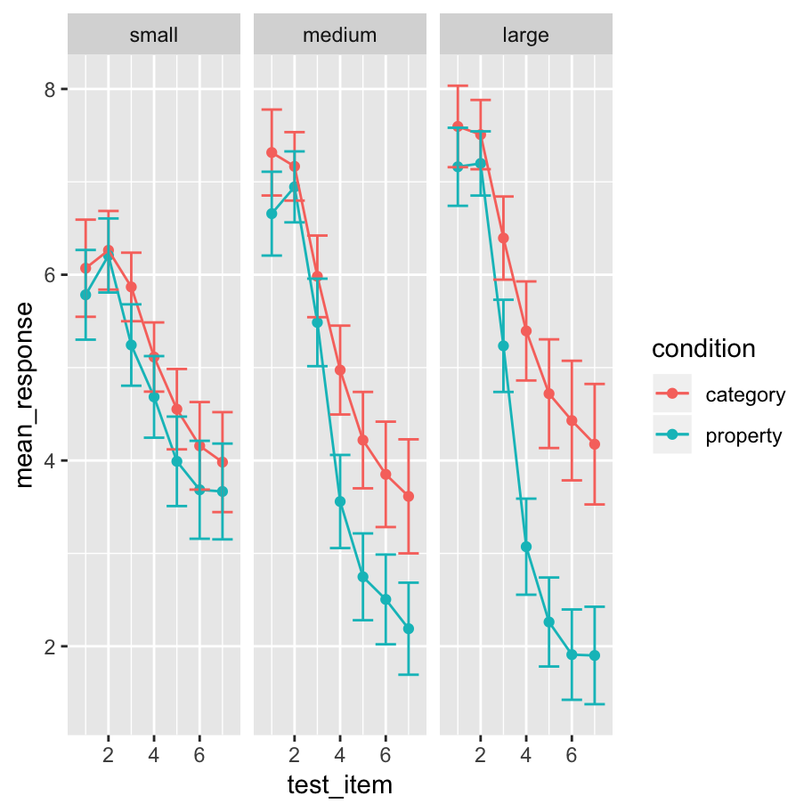 To read this plot - the thick line in the middle of the box is the median; the box itself spans the range from the 25th percentile to the 75th percentile; and the “whiskers” cover the full range from the minimum value to the maximum value.
In practice, this isn’t quite how boxplots usually work. In most applications, the “whiskers” don’t cover the full range from minimum to maximum. Instead, they actually go out to the most extreme data point that doesn’t exceed a certain bound. By default, this value is 1.5 times the interquartile range, corresponding to a range value of 1.5. Any observation whose value falls outside this range is plotted as a circle instead of being covered by the whiskers, and is commonly referred to as an outlier.7 For the AFL margins data, there is one observation - the game with a margin of 116 points - that falls outside this range. As a consequence, the upper whisker is pulled back to the next largest observation (a value of 108), and the observation at 116 is plotted as a circle, as illustrated below:
boxplot( afl.margins )
15.5.1 Visual style of your boxplot
I’ll talk a little more about the relationship between boxplots and outliers in a moment, but before I do let’s take the time to clean this figure up. Boxplots in R are extremely customisable. In addition to the usual range of graphical parameters that you can tweak to make the plot look nice, you can also exercise nearly complete control over every element to the plot. Consider the boxplot in below: in this version of the plot, not only have I added labels (xlab, ylab) and removed the stupid border (frame.plot), I’ve also dimmed all of the graphical elements of the boxplot except the central bar that plots the median (border) so as to draw more attention to the median rather than the rest of the boxplot. You’ve seen all these options in previous sections in this chapter, so hopefully those customisations won’t need any further explanation. However, I’ve done two new things as well: I’ve deleted the cross-bars at the top and bottom of the whiskers (known as the “staples” of the plot), and converted the whiskers themselves to solid lines. The arguments that I used to do this are called by the ridiculous names of staplewex and whisklty,8 and I’ll explain these in a moment. But first, here’s the command:
boxplot(
x = afl.margins, # the data
xlab = "AFL games, 2010", # x-axis label
ylab = "Winning Margin", # y-axis label
border = "grey50", # dim the border of the box
frame.plot = FALSE, # don’t draw a frame
staplewex = 0, # don’t draw staples
whisklty = 1 # solid line for whisker
)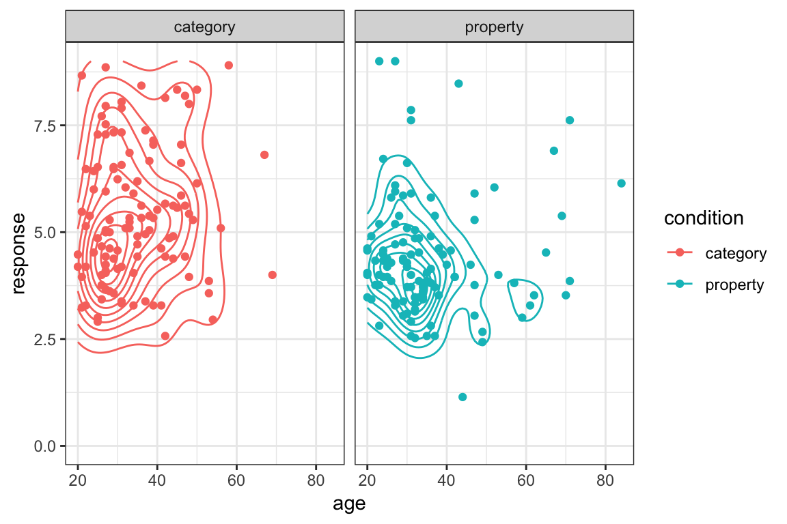 Overall, I think the resulting boxplot is a huge improvement in visual design over the default version. In my opinion at least, there’s a fairly minimalist aesthetic that governs good statistical graphics. Ideally, every visual element that you add to a plot should convey part of the message. If your plot includes things that don’t actually help the reader learn anything new, you should consider removing them. Personally, I can’t see the point of the cross-bars on a standard boxplot, so I’ve deleted them.
Okay, what commands can we use to customise the boxplot? If you type ?boxplot and flick through the help documentation, you’ll notice that it does mention staplewex as an argument, but there’s no mention of whisklty. The reason for this is that the function that handles the drawing is called bxp, so if you type ?bxp all the gory details appear. Here’s the short summary. In order to understand why these arguments have such stupid names, you need to recognise that they’re put together from two components. The first part of the argument name specifies one part of the box plot: staple refers to the staples of the plot (i.e., the cross-bars), and whisk refers to the whiskers. The second part of the name specifies a graphical parameter: wex is a width parameter, and lty is a line type parameter. The parts of the plot you can customise are:
box. The box that covers the interquartile range.med. The line used to show the median.whisk. The vertical lines used to draw the whiskers.staple. The cross bars at the ends of the whiskers.out. The points used to show the outliers.
The actual graphical parameters that you might want to specify are slightly different for each visual element, just because they’re different shapes from each other. As a consequence, the following options are available:
- Width expansion:
boxwex,staplewex,outwex. These are scaling factors that govern the width of various parts of the plot. The default scaling factor is (usually) 0.8 for the box, and 0.5 for the other two. Note that in the case of the outliers this parameter is meaningless unless you decide to draw lines plotting the outliers rather than use points. - Line type:
boxlty,medlty,whisklty,staplelty,outlty. These govern the line type for the relevant elements. The values for this are exactly the same as those used for the regular lty parameter, with two exceptions. There’s an additional option where you can setmedlty = "blank"to suppress the median line completely (useful if you want to draw a point for the median rather than plot a line). Similarly, by default the outlier line type is set tooutlty = "blank", because the default behaviour is to draw outliers as points instead of lines. - Line width:
boxlwd,medlwd,whisklwd,staplelwd,outlwd. These govern the line widths for the relevant elements, and behave the same way as the regularlwdparameter. The only thing to note is that the default value formedlwdvalue is three times the value of the others. - Line colour:
boxcol,medcol,whiskcol,staplecol,outcol. These govern the colour of the lines used to draw the relevant elements. Specify a colour in the same way that you usually do. - Fill colour:
boxfill. What colour should we use to fill the box? - Point character:
medpch,outpch. These behave like the regularpchparameter used to select the plot character. Note that you can setoutpch = NAto stop R from plotting the outliers at all, and you can also setmedpch = NAto stop it from drawing a character for the median (this is the default!) - Point expansion:
medcex,outcex. Size parameters for the points used to plot medians and outliers. These are only meaningful if the corresponding points are actually plotted. So for the default boxplot, which includes outlier points but uses a line rather than a point to draw the median, only theoutcexparameter is meaningful. - Background colours:
medbg,outbg. Again, the background colours are only meaningful if the points are actually plotted.
Taken as a group, these parameters allow you almost complete freedom to select the graphical style for your boxplot that you feel is most appropriate to the data set you’re trying to describe. That said, when you’re first starting out there’s no shame in using the default settings! But if you want to master the art of designing beautiful figures, it helps to try playing around with these parameters to see what works and what doesn’t. Finally, I should mention a few other arguments that you might want to make use of:
horizontal. Set this toTRUEto display the plot horizontally rather than vertically. varwidth. Set this to TRUE to get R to scale the width of each box so that the areas are proportional to the number of observations that contribute to the boxplot. This is only useful if you’re drawing multiple boxplots at once.show.names. Set this toTRUEto get R to attach labels to the boxplots.notch. If you setnotch = TRUE, R will draw little notches in the sides of each box. If the notches of two boxplots don’t overlap, then there is a “statistically significant” difference between the corresponding medians (more on this later when I talk about statistical inference)
15.5.2 Drawing multiple boxplots
What if you want to draw multiple boxplots at once? Suppose, for instance, I wanted separate boxplots showing the AFL margins not just for 2010, but for every year between 1987 and 2010. To do that, the first thing we’ll have to do is find the data. These are stored in the aflsmall2.Rdata file, which contains a data frame called afl2:
load("./data/aflsmall2.Rdata") # load the data
head(afl2) # display the first six rows## margin year
## 1 33 1987
## 2 59 1987
## 3 45 1987
## 4 91 1987
## 5 39 1987
## 6 1 1987The afl2 data frame contains data from a total of 4296 games, so it would be nice to summarise them in an easily digestible fashion. Specifically, what we want to do is have R draw boxplots for the margin variable, plotted separately for each year. The way to do this using the boxplot function is to input a formula rather than a variable as the input. In this case, the formula we want is margin ~ year. So our command now looks like this:
boxplot(
formula = margin ~ year,
data = afl2
)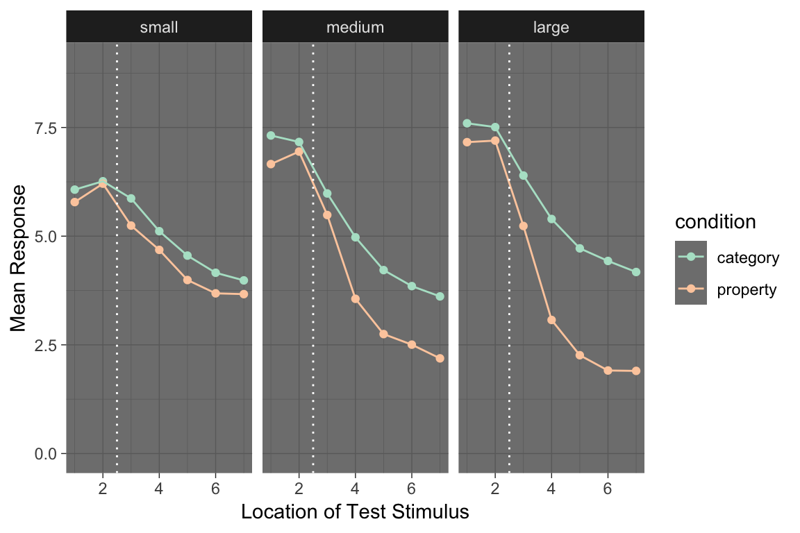 Even this, the default version of the plot, gives a sense of why it’s sometimes useful to choose boxplots instead of histograms. Even before taking the time to turn this basic output into something more readable, it’s possible to get a good sense of what the data look like from year to year without getting overwhelmed with too much detail. Now imagine what would have happened if I’d tried to cram 24 histograms into this space: no chance at all that the reader is going to learn anything useful.
That being said, the default boxplot leaves a great deal to be desired in terms of visual clarity. The outliers are too visually prominent, the dotted lines look messy, and the interesting content (i.e., the behaviour of the median and the interquartile range across years) gets a little obscured. Fortunately, this is easy to fix, since we’ve already covered a lot of tools you can use to customise your output. After playing around with several different versions of the plot, the one I settled on is shown below. The command I used to produce it is long, but not complicated:
boxplot(
formula = margin ~ year, # the formula
data = afl2, # the data set
xlab = "AFL season", # x axis label
ylab = "Winning Margin", # y axis label
frame.plot = FALSE, # don’t draw a frame
staplewex = 0, # don’t draw staples
staplecol = "white", # (fixes a tiny display issue)
boxwex = .75, # narrow the boxes slightly
boxfill = "grey80", # lightly shade the boxes
whisklty = 1, # solid line for whiskers
whiskcol = "grey70", # dim the whiskers
boxcol = "grey70", # dim the box borders
outcol = "grey70", # dim the outliers
outpch = 20, # outliers as solid dots
outcex = .5, # shrink the outliers
medlty = "blank", # no line for the medians
medpch = 20, # instead, draw solid dots
medlwd = 1.5 # make them larger
) Of course, given that the command is that long, you might have guessed that I didn’t spend ages typing all that rubbish in over and over again. Instead, I wrote a script, which I kept tweaking until it produced the figure that I wanted. We talked about scripts earlier - and I hope most readers are using them at this point - but just in case you’re not, and given the length of this command, I thought I’d remind you that there’s an easier way of trying out different commands than typing them all in over and over.
Of course, given that the command is that long, you might have guessed that I didn’t spend ages typing all that rubbish in over and over again. Instead, I wrote a script, which I kept tweaking until it produced the figure that I wanted. We talked about scripts earlier - and I hope most readers are using them at this point - but just in case you’re not, and given the length of this command, I thought I’d remind you that there’s an easier way of trying out different commands than typing them all in over and over.
15.6 Scatterplots
Scatterplots are a simple but effective tool for visualising data. We’ve already seen scatterplots in this chapter, when using the `plot function to draw the Fibonacci variable as a collection of dots. However, for the purposes of this section I have a slightly different notion in mind. Instead of just plotting one variable, what I want to do with my scatterplot is display the relationship between two variables. It’s this latter application that we usually have in mind when we use the term “scatterplot”. In this kind of plot, each observation corresponds to one dot: the horizontal location of the dot plots the value of the observation on one variable, and the vertical location displays its value on the other variable. In many situations you don’t really have a clear opinions about what the causal relationship is (e.g., does A cause B, or does B cause A, or does some other variable C control both A and B). If that’s the case, it doesn’t really matter which variable you plot on the x-axis and which one you plot on the y-axis. However, in many situations you do have a pretty strong idea which variable you think is most likely to be causal, or at least you have some suspicions in that direction. If so, then it’s conventional to plot the cause variable on the x-axis, and the effect variable on the y-axis. With that in mind, let’s look at how to draw scatterplots in R. Here’s a simple data set, one that I came up with when my first child was very young…
load("./data/parenthood.Rdata")
head(parenthood)## mySleep babySleep myGrump day
## 1 7.59 10.18 56 1
## 2 7.91 11.66 60 2
## 3 5.14 7.92 82 3
## 4 7.71 9.61 55 4
## 5 6.68 9.75 67 5
## 6 5.99 5.04 72 6As you might guess, this - fictious but annoyingly plausible - data set tracks the relationship between the amount of sleep that I get (mySleep) and how grumpy I am the next day (myGrump), as a function of how much the baby has slept (babySleep), across a sequence of 100 days (day). Here’s the scatterplot showing the relationship between my sleep and my grumpines:
plot(
x = parenthood$mySleep, # data on the x-axis
y = parenthood$myGrump # data on the y-axis
)
As usual, we want to add some labels, but there’s a few other things we might want to do as well. Firstly, it’s sometimes useful to rescale the plots. By default, R selects the scale so that the data fall neatly in the middle. But, in this case, we happen to know that the grumpiness measure falls on a scale from 0 to 100 (apparently!), and the hours slept falls on a natural scale between 0 hours and about 12 or so hours (the longest I can sleep in real life). So the command I might use to draw this is:
plot(
x = parenthood$mySleep, # data on the x-axis
y = parenthood$myGrump, # data on the y-axis
xlab = "My sleep (hours)", # x-axis label
ylab = "My grumpiness (0-100)", # y-axis label
xlim = c(0,12), # scale the x-axis
ylim = c(0,100), # scale the y-axis
pch = 20, # change the plot type
col = "gray50", # dim the dots slightly
frame.plot = FALSE # don’t draw a box
)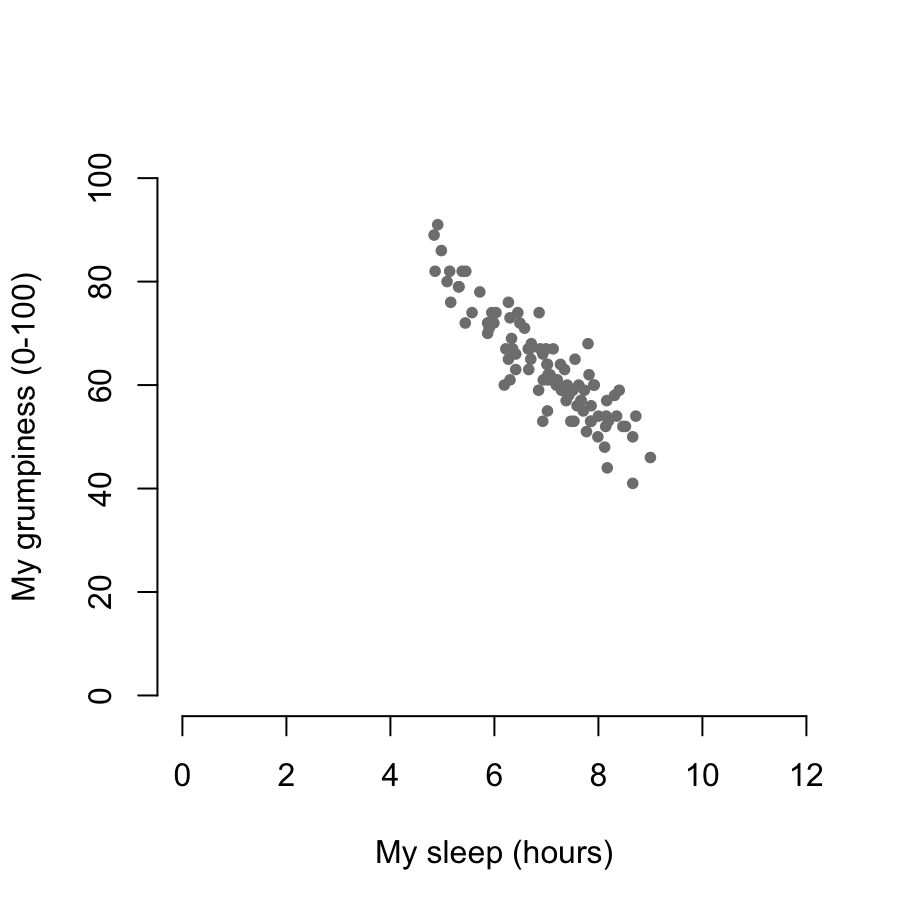
However, it’s worth noting that our data set here has four variables, and we might want to visualise the relationships among them. To that end, the pairs function is pretty handy, as it will draw a scatterplot matrix, like so:
pairs(
x = parenthood, # data set
pch = 19 # solid markers
)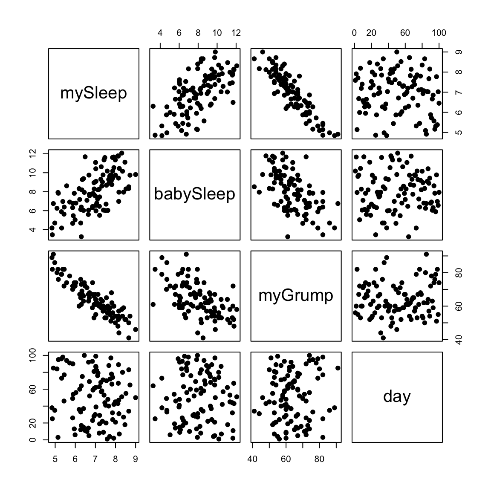 As always, the plot can be customised as much as you like in order to get something nicer.
15.7 Bar graphs
Another form of graph that you often want to plot is the bar graph. The main function that you can use in R to draw them is the barplot function. To illustrate the use of the function, I’ll use the AFL data I’ve mentioned earlier. This time around, the data I’m interested in is a count of the number of finals games each team played in during the years 1987-2010. What I want to do is draw a bar graph that displays the number of finals that each team has played in over the time spanned by the AFL data set. So, let’s start by loading the data, and this time I’ll show a little bit of how we might process the data
load("./data/afl24.Rdata") # load data
head(afl) # show the first few rows## home.team away.team home.score away.score year round weekday day
## 1 North Melbourne Brisbane 104 137 1987 1 Fri 27
## 2 Western Bulldogs Essendon 62 121 1987 1 Sat 28
## 3 Carlton Hawthorn 104 149 1987 1 Sat 28
## 4 Collingwood Sydney 74 165 1987 1 Sat 28
## 5 Melbourne Fitzroy 128 89 1987 1 Sat 28
## 6 St Kilda Geelong 101 102 1987 1 Sat 28
## month is.final venue attendance
## 1 3 FALSE MCG 14096
## 2 3 FALSE Waverley Park 22550
## 3 3 FALSE Princes Park 19967
## 4 3 FALSE Victoria Park 17129
## 5 3 FALSE MCG 18012
## 6 3 FALSE Gold Coast Stadium 15867home.finals <- table( afl$home.team[afl$is.final == TRUE] ) # count the number of home finals
away.finals <- table( afl$away.team[afl$is.final == TRUE] ) # count the number of away finals
finals <- home.finals + away.finals # add them together
print(finals) ##
## Adelaide Brisbane Carlton Collingwood
## 26 25 26 28
## Essendon Fitzroy Fremantle Geelong
## 32 0 6 39
## Hawthorn Melbourne North Melbourne Port Adelaide
## 27 28 28 17
## Richmond St Kilda Sydney West Coast
## 6 24 26 38
## Western Bulldogs
## 24Here’s the bar graph:
barplot( finals )
Hm. To fix this we’re going to need to do a few things. First, we’ll need to rotate the labels on the x-asis. Earlier on I mentioned there’s a graphical argument called las (label style?) that lets you rotate the labels. Specifically, we’ll need to set las = 2 in order to get vertically oriented labels. However, you can see there’s going to be a problem because the figure doesn’t have enough room to include some of the team names:
barplot(
height = finals,
las = 2
)
A simple fix would be to use shorter names rather than the full name of all teams, and in many situations that’s probably the right thing to do. However, at other times you really do need to create a bit more space to add your labels, so I’ll show you how to do that.
15.8 Changing global settings
Altering the margins to the plot is actually a somewhat more complicated exercise than you might think. In principle it’s a very simple thing to do: the size of the margins is governed by a graphical parameter called mar, so all we need to do is alter this parameter. First, let’s look at what the mar argument specifies. The mar argument is a vector containing four numbers: specifying the amount of space at the bottom, the left, the top and then the right of the figure. The units are “number of ‘lines’”. The default value is mar = c(5.1, 4.1, 4.1, 2.1), meaning that R leaves 5.1 “lines” empty at the bottom, 4.1 lines on the left and the bottom, and only 2.1 lines on the right. In order to make more room at the bottom, what I need to do is change the first of these numbers. A value of 10.1 should do the trick.
So far this doesn’t seem any different to the other graphical parameters that we’ve talked about. However, because of the way that the traditional graphics system in R works, you need to specify what the margins will be before calling your high-level plotting function. Unlike the other cases we’ve see, you can’t treat mar as if it were just another argument in your plotting function. Instead, you have to use the par function to change the graphical parameters beforehand, and only then try to draw your figure. Usually, the way we would to it is this:
# global parameters
old.par <- par(no.readonly = TRUE) # store a copy of the current values of all graphics parameers
par( mar = c( 10.1, 4.1, 4.1, 2.1) ) # reset the margins to the plotting area
# draw the plot
barplot(
height = finals, # the data
las = 2, # rotate labels
ylab = "Number of Finals", # y-axis label
main = "Finals Played, 1987-2010", # figure title
col = "grey50" # shading
)
# be polite and reset the global parameters to their previous values
# because global parameters affect all subequent plots you draw!
par( old.par )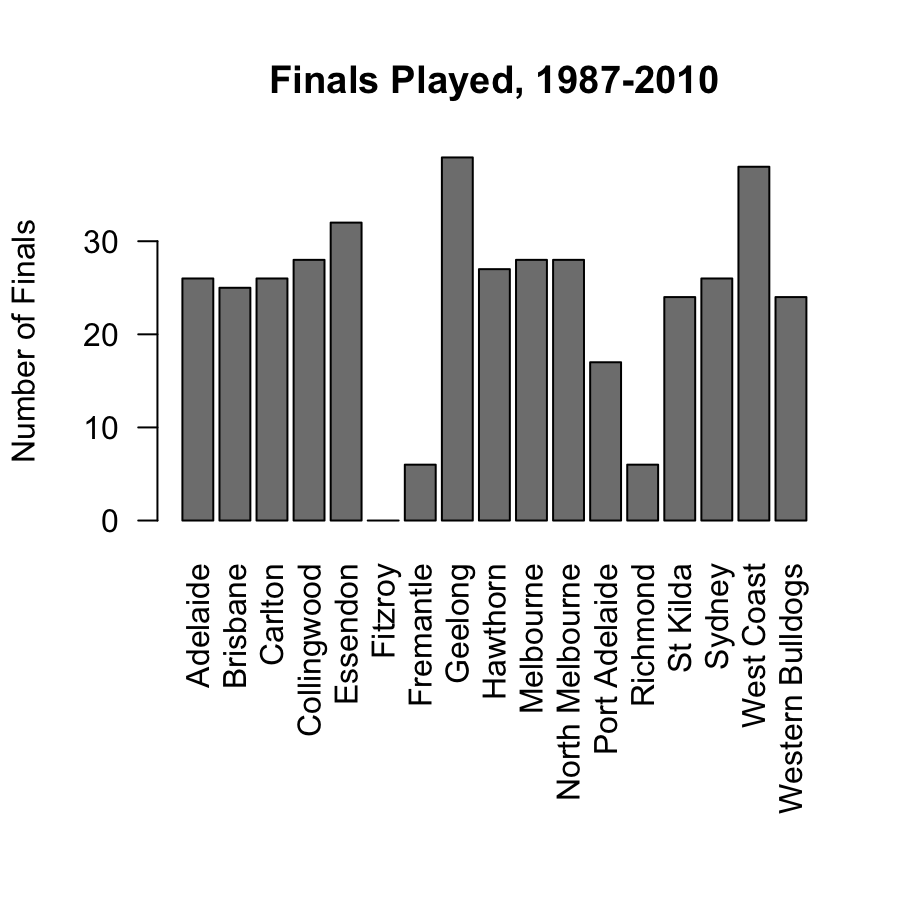
15.9 Saving image files
Hold on, you might be thinking. What’s the good of being able to draw pretty pictures in R if I can’t save them and send them to friends to brag about how awesome my data is? How do I save the picture? This is another one of those situations where the easiest thing to do is to use the Rstudio tools. If you’re running R through Rstudio, then the easiest way to save your image is to click on the “Export” button in the Plot panel (i.e., the area in Rstudio where all the plots have been appearing). When you do that you’ll see a menu that contains the options “Save Plot as PDF” and “Save Plot as Image”. Either version works. Both will bring up dialog boxes that give you a few options that you can play with, but besides that it’s pretty simple. This works pretty nicely for most situations.
Okay, as I hinted earlier, whenever you’re drawing pictures in R you’re deemed to be drawing to a device of some kind. There are devices that correspond to a figure drawn on screen, and there are devices that correspond to graphics files that R will produce for you. Assuming you’re using RStudio, the plots are being sent to the native graphics device RStudioGD. However, there’s nothing preventing you from manually sending the information to a different “device”, like jpeg. There’s a number of commands you can use to do that, but here’s a simple illustration of dev.print, one of the easier ones:
dev.print(
device = jpeg, # what are we printing to?
filename = "thisfile.jpg", # name of the image file
width = 480, # how many pixels wide should it be
height = 300 # how many pixels high should it be
)This command will take the active plot and “print it” as a JPEG file. The filename = "thisfile.jpg" part tells R what to name the graphics file, and the width = 480 and height = 300 arguments tell R to draw an image that is 300 pixels high and 480 pixels wide. If you want a different kind of file, just change the device argument from jpeg to something else. R has devices for png, tiff and bmp that all work in exactly the same way as the jpeg command, but produce different kinds of files. It can also produce pdf, postscript and other kinds of files in this fashion.
15.10 Summary
Perhaps I’m a simple minded person, but I love pictures. Every time I write a new scientific paper, one of the first things I do is sit down and think about what the pictures will be. In my head, an article is really just a sequence of pictures, linked together by a story. All the rest of it is just window dressing. What I’m really trying to say here is that the human visual system is a very powerful data analysis tool. Give it the right kind of information and it will supply a human reader with a massive amount of knowledge very quickly. Not for nothing do we have the saying “a picture is worth a thousand words”.
If you are interested, take a look at the various
devfunctions for working with graphics devces, such asdev.new,dev.print,dev.offetc. I won’t talk about those here because I’m focusing on tidyverse but they’re handy in other situations↩It’s worth acknowledging that ggplot2 and builds off the grid graphics system that we very briefly encountered when using TurtleGraphics↩
On the off chance that this isn’t enough freedom for you, you can select a colour directly as a “red, green, blue” specification using the
rgbfunction, or as a “hue, saturation, value” specification using thehsvfunction.↩Also, there’s a low level function called
axisthat allows a lot more control over the appearance of the axes.↩If you’re doing this, I’d actually like to know where you managed to find a physical phone book…↩
Sometimes referred to as Tukey’s five number summary of a sample, after John Tukey.↩
Outliers are a tricky topic. The “automatic” detection of outliers via boxplots is handy, but it’s not always clear what to do with them. For the AFL margins data, for instance, the
boxplotfunction “detects” a single outlier, the one game in the season with a margin of 116. So does this value of 116 constitute a funny observation not? Should we “exclude” this observation from our analyses? Possibly. As it turns out the game in question was Fremantle v Hawthorn, and was played in round 21 (the second last home and away round of the season). Fremantle had already qualified for the final series and for them the outcome of the game was irrelevant; and the team decided to rest several of their star players. As a consequence, Fremantle went into the game severely underpowered. In contrast, Hawthorn had started the season very poorly but had ended on a massive winning streak, and for them a win could secure a place in the finals. With the game played on Hawthorn’s home turf - well, Launceston, which isn’t technically Hawthorn’s home ground but it kind of is a second home ground for them in practice - and with so many unusual factors at play, it is perhaps no surprise that Hawthorn annihilated Fremantle by 116 points. Two weeks later, however, the two teams met again in an elimination final on Fremantle’s home ground, and Fremantle won comfortably by 30 points. Make of that what you will, but the overarching point here is that dealing with extreme observations is always a tricky business.↩I realise there’s a kind of logic to the way these names are constructed, but they still sound dumb. When I typed this sentence, all I could think was that it sounded like the name of a kids movie if it had been written by Lewis Carroll: “The frabjous gambolles of Staplewex and Whisklty” or something along those lines.↩